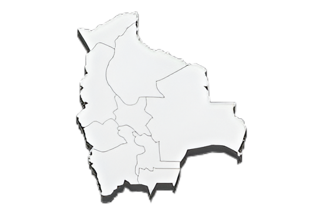

<!-- Mapa de Bolivia con puntos -->
<div id="Mapa" class="container-fluid">
    <h2 class="text-center mt-3">Nuestra Presencia en Bolivia</h2>
    <div class="map-container">
        

        <!-- Puntos de ubicación -->
        <style>
            .map-container {
                position: relative; /* Permite que los puntos se posicionen relativos a este contenedor */
                text-align: center; /* Centra la imagen horizontalmente */
                display: flex; /* Usar flexbox para centrar verticalmente */
                justify-content: center; /* Centra horizontalmente */  
                height: 60%; /* Cambia a auto para que ajuste a la imagen */
                margin-top: 0; /* Elimina el espacio en la parte superior */
                margin-bottom: 0; /* Elimina el espacio en la parte inferior */
            }

            .map-container img {
                max-width: 100%; /* Ajusta el tamaño máximo de la imagen */
                height: auto; /* Asegúrate de que la imagen mantenga su proporción */
                display: block; /* Elimina el espacio en la parte inferior */
            }

            .map-point {
                position: absolute; /* Posición absoluta para los puntos */
                width: 10px; /* Ajusta el tamaño del punto */
                height: 10px; /* Ajusta el tamaño del punto */
                background-color: red; /* Color del punto */
                border-radius: 50%; /* Hace que el punto sea redondo */
                transform: translate(-50%, -50%); /* Centra el punto */
                cursor: pointer; /* Cambia el cursor al pasar sobre el punto */
            }

            .tooltip {
                display: none; /* Oculta el tooltip por defecto */
                position: absolute; /* Posición absoluta para el tooltip */
                background-color: white; /* Color de fondo del tooltip */
                border: 1px solid #ccc; /* Borde del tooltip */
                padding: 10px; /* Espaciado interior del tooltip */
                z-index: 10; /* Índice z para asegurar que el tooltip está encima de otros elementos */
                max-width: 200px; /* Ancho máximo del tooltip */
                border-radius: 10px; /* Radio de borde para redondear el tooltip */
            }
        </style>

        <div class="map-point" style="top: 40%; left: 38%;"
            onmouseover="showTooltip(event, 'El Alto', 'img/pastilla.jpeg','holass')" onmouseout="hideTooltip()"></div>
        <!-- Punto rojo para El Alto -->
        <div class="map-point" style="top: 45%; left: 39%;"
            onmouseover="showTooltip(event, 'La Paz', 'img/pastilla.jpeg','holass')" onmouseout="hideTooltip()"></div>
        <div class="map-point" style="top: 63%; left: 41%;"
            onmouseover="showTooltip(event, 'Oruro', 'img/pastilla.jpeg','holass')" onmouseout="hideTooltip()"></div>
        <div class="map-point" style="top: 15%; left: 42%;"
            onmouseover="showTooltip(event, 'Beni', 'img/pastilla.jpeg','holass')" onmouseout="hideTooltip()"></div>
        <div class="map-point" style="top: 29%; left: 46%;"
            onmouseover="showTooltip(event, 'Pando', 'img/pastilla.jpeg','holass')" onmouseout="hideTooltip()"></div>
        <div class="map-point" style="top: 52%; left: 46%;"
            onmouseover="showTooltip(event, 'Cochabamba', 'img/pastilla.jpeg','holass')" onmouseout="hideTooltip()">
        </div>
        <div class="map-point" style="top: 50%; left: 53%;"
            onmouseover="showTooltip(event, 'Santa Cruz', 'img/pastilla.jpeg','holass')" onmouseout="hideTooltip()">
        </div>
        <div class="map-point" style="top: 70%; left: 49%;"
            onmouseover="showTooltip(event, 'Sucre', 'img/pastilla.jpeg','holass')" onmouseout="hideTooltip()"></div>
        <div class="map-point" style="top: 78%; left: 43%;"
            onmouseover="showTooltip(event, 'Potosi', 'img/pastilla.jpeg','holass')" onmouseout="hideTooltip()"></div>
        <div class="map-point" style="top: 80%; left: 50%;"
            onmouseover="showTooltip(event, 'Tarija', 'img/pastilla.jpeg','holass')" onmouseout="hideTooltip()"></div>
        <div id="tooltip" class="tooltip"></div> <!-- Tooltip para mostrar información -->
    </div>
</div>

<script>
    AOS.init({
        duration: 1000, // Duración de la animación en milisegundos
        once: true, // Animar solo una vez
    });

    function showTooltip(event, name, imgSrc, description) {
        const tooltip = document.getElementById('tooltip');
        tooltip.innerHTML = `<strong>${name}</strong><br><br>${description}`; // Contenido del tooltip
        tooltip.style.display = 'block';
        tooltip.style.left = `${event.pageX + 10}px`; // Posición del tooltip
        tooltip.style.top = `${event.pageY + 10}px`;
    }

    function hideTooltip() {
        const tooltip = document.getElementById('tooltip');
        tooltip.style.display = 'none'; // Oculta el tooltip
    }
</script>
   <!-- Footer Start -->
  
   <!-- Footer End -->